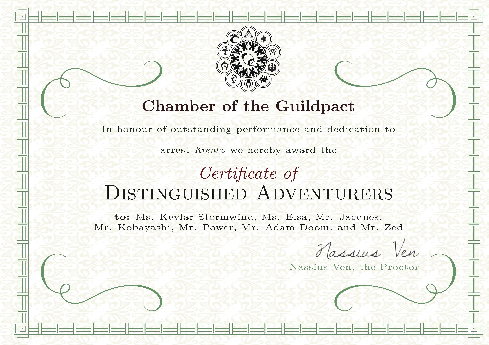

凯芙拉·斯托韦恩 (层层蹭蹭)
艾尔莎(熙瓜)
雅克 (lcs)
小林 (tx)
帕瓦 (zy)
Adam Doom (hkh)
Zed (rlh)
成功抓获克仑可之后，纳休斯为七位冒险家颁发了十会盟堂的荣誉证书：

为了向家族证明自己的决定是正确而荣耀的，凯芙拉邀请同伴前往深水城——他的故乡——向她的父亲介绍他们的事迹。
七位冒险家于是踏上了前往剑湾的渡船，经过20天的航行，来到了无冬城。
船上的休整期：20天（2周）
- 凯芙拉：工作，度过2周舒适生活。
- 艾尔莎：工作，度过2周舒适生活；工作中受到赏识，获得25gp。
- 雅克：为盗贼公会工作，度过2周简朴生活，获得20gp；但工作中被一个无冬城的家庭发现。
- 小林：在渡船上进行宗教服务，度过了2周舒适生活；工作中帮助的人为他带来了2次恩惠。
- 帕瓦：工作，度过了1周舒适生活和1周的贫穷生活。
- Adam：抄写卷轴（雷鸣波卷轴、燃烧之手卷轴），度过2周简朴的生活，共花费70gp。
- Zed：在渡船上角斗，度过2周富裕生活，赢得比赛获得200gp，花费80gp。
众人在无冬城的酒馆认识了一位叫做甘德伦·寻岩者的矮人。甘德伦听说七人是有经验的冒险家，便热情地邀请七人担任他的保镖，帮他将一批货物运送到无冬城南方的凡达林小镇上，他与那的老板约定好运费为每人10gp，而作为在路上保护他的报酬，他也会给冒险家们每人10gp。货物预计将在十天后筹备完毕，约定届时于无冬城的驿站见面出发。
无冬城的休整期：10天（1周）
- 凯芙拉：在无冬城进行宗教服务，度过1周舒适生活；工作中获得了2次恩惠。
- 艾尔莎：工作，度过1周舒适生活。
- 雅克：调查关于值钱物品的信息，度过1周简朴生活，花费20gp，打听到了关于潮音洞穴中魔法物品工厂的情报。
- 小林：在无冬城进行宗教服务，度过了1周舒适生活；工作中帮助的人为他带来了2次恩惠。（恩惠数量已达上限）
- 帕瓦：在无冬城的竞技场中角斗，赢得比赛获得了50gp；度过了1周简朴生活，花费10gp。
- Adam：度过1周简朴的生活，花费10gp。
- Zed：在无冬城的竞技场中角斗，但并没有赢得比赛，度过1周简朴生活，花费10gp。
一周后，众人来到了约定见面的地点，却只看到一个力工在帮忙搬运货物。工人看到冒险家们，擦了擦头上的汗，从怀里掏出一封信，说道：“你们就是老甘叫来的冒险家们吧，老甘让我把这封信给你们。”搬完最后一箱货物，工人便与众人告了别离开了。
打开甘德伦的信，众人得知甘德伦在两天前与一个叫做修达·霍温特的战士相谈甚欢，因为他也要前往凡达林，甘德伦决定与他一同动身出发，而各位只需将货物安全运至凡达林即可。凯芙拉气愤于修达抢了保镖的活，众人也嘀咕着少了的报酬。无论如何，众人还是坐上了货车出发前往凡达林。
三猪小径的某处，凯芙拉牵着货车前的两头牛，坐在驾驶位上欣赏着前方的景色。艾尔莎和雅克在货车两侧的茂密草丛中潜行着跟随货车，准备应对路上可能出现的威胁。小林、Adam、Zed坐在货车里聊着天，而帕瓦则已经爬上了货车顶，俯视着周围。
七人已经一路顺风地经过了大公路，今天转至三猪小径后，已经行进了半日。来到一个转弯口时，凯芙拉突然发现前方的路被两匹死马挡住，每匹马上都插着几只黑羽箭。她立刻拉停了货车，向艾尔莎和雅克打了个手势，示意他们上前察看。雅克伏着身子走到死马的旁边，看到其中一匹马的马鞍上印着甘德伦的徽章，而另一匹马的马鞍则印着一个不熟悉的徽章。马的鞍囊是空的，而地上还有一个打开的空地图匣。此时，哥布林正牵着狼朝艾尔莎和雅克靠近！
战斗：哥布林伏击
离死马30尺远的路两侧，一边两个哥布林也从草丛中现身。雅克被靠近的哥布林的弯刀劈中，又遭到狼的撕咬，当即昏迷倒地。车上的四人立刻跳下了车赶往现场，Adam使用火焰箭点燃了几处草丛，帕瓦在车顶张开长弓狙击远处的哥布林。
经过一番混战，路边的6只哥布林和2头狼被凯芙拉、艾尔莎、Adam和Zed击杀，而战斗中偷偷靠近抢夺车上货物的2只哥布林也被帕瓦和艾尔莎拦截，小林及时救治了雅克。凯芙拉将哥布林抱走的酒桶、食物捡了回来，但货车旁已经打碎了几瓶灯油和几个矿灯，铲子和镐子也散落一地。艾尔莎从哥布林身上搜到56cp。
经验奖励：每人75EXP
战斗之后，众人在路上就地休息。艾尔莎在北边的草丛中发现了一些小型生物的足迹，以她的经验判断，最近有约一打的哥布林在此处活动，并且在一些潮湿的地面上可以看出拖曳的痕迹。
休息之后，Adam坐在草丛中的货车里一边翻看他的法术书一边看管货物，其余六人决定前往追踪哥布林。在跟踪哥布林踪迹的路上，艾尔莎和雅克发现并解除了哥布林设置的一个套索陷阱和一个陷坑。沿西北方向前进了大约5里，六人来到一片开阔地带，足迹延伸向前方山脚的洞穴，从洞口流出一条浅浅的小溪，溪对岸生长着一片茂密的灌木丛。
里程碑：哥布林洞穴
经验奖励：每人75EXP
雅克悄悄涉水靠近对岸的灌木丛，摸到洞口附近，却发现此处是一个藏在灌木丛中的暗哨，两只哥布林正在灌木丛中的空地上睡觉，似乎并没有发现他。雅克示意艾尔莎上来帮忙，但艾尔莎跨过溪流时的声响惊动了哥布林。两只哥布林警觉地醒来，抓起身边的武器便冲向雅克。
战斗：暗哨
雅克被2只哥布林用弯刀砍倒在地。Zed掷出一支标枪，刺穿了一个哥布林。艾尔莎和帕瓦及时跟上，用弓解决了这两个哨兵。凯芙拉用尽她最后的圣疗能量，为雅克恢复了体力。
经验奖励：除Adam外每人20EXP